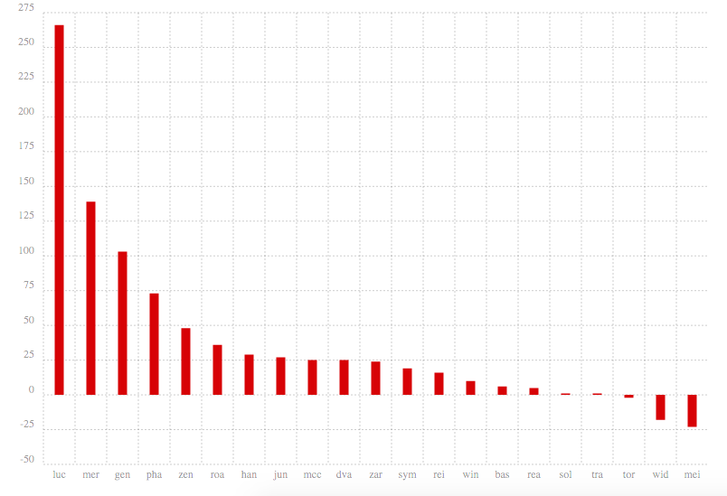
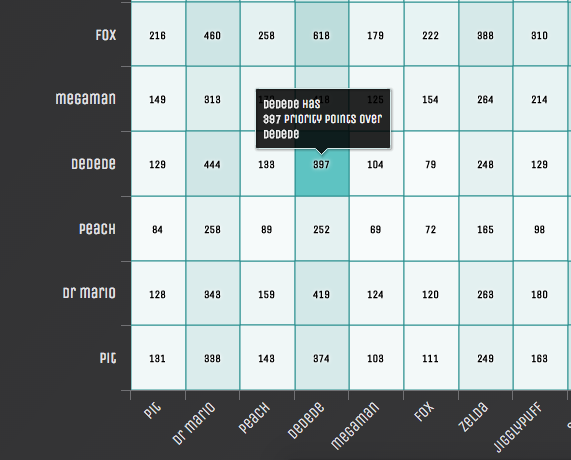

I'm a big Overwatch gamer. If you haven't played and you consider yourself a gamer, you should play it - it's a damn-near perfect casual FPS. Around the 3rd week of Overwatch's release date, I mined about 3 days worth of Overwatch data off of reddit. I grabbed reddit posts and comments that mentioned each Overwatch hero. With each one of those posts and comments, I tried to evaluate and analyze what reddit users were saying about each hero on the Overwatch subreddit. It's a very simple way of text analaysis. The following photo link will show you some cool visualizations I made that explain my findings about reddit opinion on different Overwatch heroes!
I've recently been playing a lot of super smash brothers 4 on the Wii U. And because of that, I've been watching a lot of pro players on youtube and twitch. To me, it seemed like they all payed a ton of attention to priorities with attacks. If Jigglypuff's pound had a higher priority than Link's arrow, Jigglypuff's pound would cancel Link's arrow. That's priority. I did the research on priority calculations and analyzed attack damage data between every single character in smash 4. In the photo link below, I show a pretty neat heatmap that shows how much priority each character has over others.
